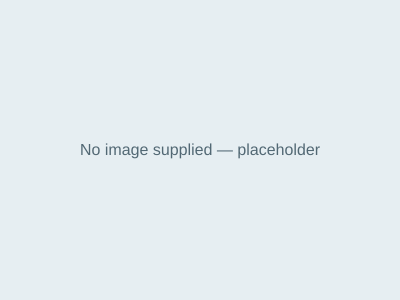

Content component
Legislation panel
Separates the legal source from its plain-English meaning.
ISQ Rise implementation preview

Child Protection Act 1999 (CPA)
The primary function of the CPA is to authorise Child Safety Services to investigate and take action to act protectively for children.
Light background shown; verify against a tinted or dark surface where the component is used that way in course.
Use when / avoid when
Use when
- A specific Act, regulation or section underpins a requirement.
Avoid when
- General policy statements with no legislative source — use a standard content panel.
Anatomy
- Document image (optional)
- Instrument name and citation
- Plain-English summary
States
Responsive behaviour
Restacks to one column; document image scales down rather than disappearing.
Accessibility
- Instrument name is a real heading; the citation year and jurisdiction are in text, not only the image.
Current implementation
Theme and platform: ISQ · Articulate Rise
Implementation type: custom-html
The classes below belong to the ISQ implementation namespace. A future theme may implement the same component contract with different tokens and class names.
Dependencies: Production CSS only.
Code
HTML
<div class="isq-split isq-split--image-left">
<div class="isq-split__media isq-split__media--contain">
<img src="../../assets/icons/placeholder.svg" alt="Cover page of the Child Protection Act 1999 (placeholder — no course imagery supplied)" loading="lazy">
</div>
<div class="isq-split__content">
<h2 class="isq-heading isq-heading--h2">Child Protection Act 1999 (CPA)</h2>
<p class="isq-body">The primary function of the CPA is to authorise Child Safety Services to investigate and take action to act protectively for children.</p>
</div>
</div>Classes used: .isq-split, .isq-heading, .isq-body
Governance metadata
| Owner | Design and development steward |
|---|---|
| Status | Approved |
| Version introduced | 1.0.0 |
| Last reviewed | 2026-07 |
| Known limitations | None recorded. |